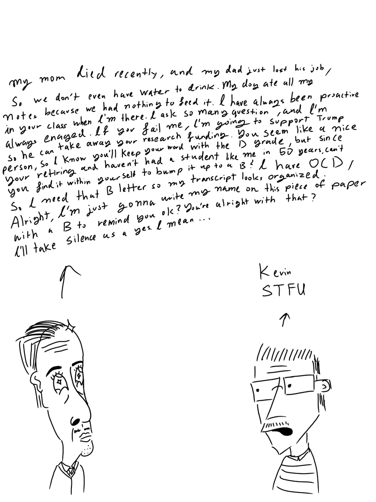

A disclaimer to begin this story: Biology is in fact a pseudoscience. If you were to point a gun to my head and had me tell you a time when I used osmosis, I would suggest just take the fucking shot. “Jesus Christ” and “Stay after class” were common phrases used by my professor when I handed him my quiz. I remember he held me hostage after class for a 30 minute private lecture about how the female reproductive organ is not the vagina but it’s the uterus. Well first off 2025 males can have uterus as well. An F was to be expected, so I rallied seven other people who were failing as well. On the last day of class, I made him stay behind and gave him a lecture speaking about the emotional trauma we had during this class and, since we were buttering him up, we told him we would have taken him for another semester . We knew he was retiring and just wanted to leave so we had to stall till he got rid of us. At the end He gave me a B not because I deserve it, but because he told me
- “C.C I never want to see you again” - Biology Professor